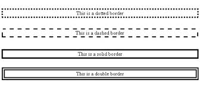

Posted on 7 SEPTEMBER, 2014
space case: a study in margins, padding, and borders
When positioning elements in CSS, you will inevitably encounter three parameters vital to ensuring accurate positioning. Let's start with the obvious: these parameters are not interchangable. Moving on...
We'll begin with borders. These things:

Simply put, borders are a frame around your element. They run along the top, bottom, left, and right boundaries of an element. They can be solid, dotted, dashed, even rounded (using the border-radius parameter), and they can be extremely useful for organizing your content. I highly recommend using a unversal selector (*) to place a thin border around every element on your page in order to visualize your space better when you first begin coding in CSS (this helps immensely when positioning elements porduces unexpected results). Once thing to keep in mind: borders will not increase the space between the element you are working on and an adjacent element, or between the edge of your element and the content inside. That's where the margin and padding come in!
On to the Margin!
Margins are the spaces between the element you are working with and any adjacent elements. By default, there is no space in between one element and the next in any direction. You use the margin parameter to push your element away from the top, bottom, left, or right from whatever happens to be on that side. Note: the margin parameter does nothing to the content inside the element you are working with. You know what that means...
Padding
Padding works just like margins but on the inside of your element rather than the outside. Again, there is no space between the edge of your element (or border) and the content inside of it. Use the padding parameter to provide breathing room between your border and what lives inside it.